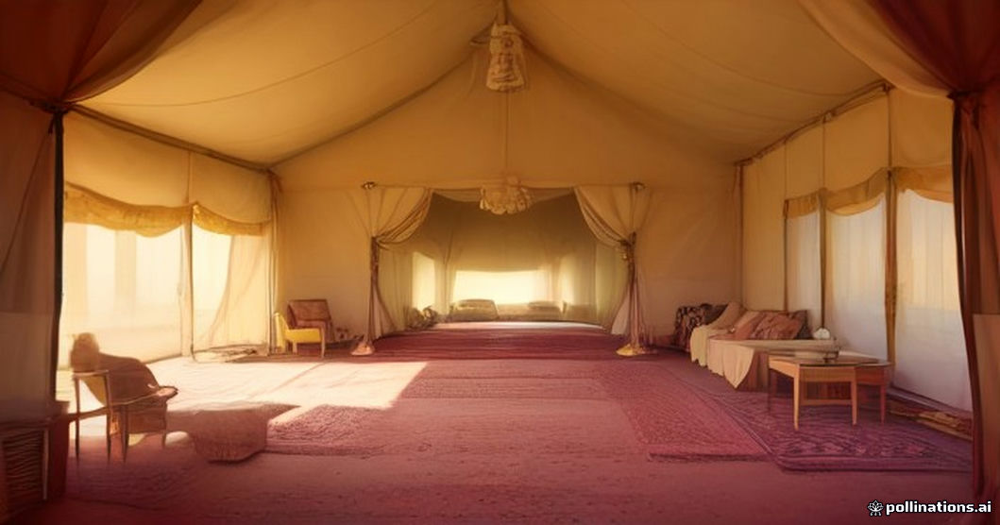

When booking a desert tour with children, the tent tier choice changes more than just the thread count of your sheets. Erg Chebbi offers two main setups: traditional standard camps with shared facilities set further into dunes, and luxury camps with private en-suite bathrooms, running water, and electricity. Both deliver the exact same desert sky, but family dynamics behave very differently depending on which layout you select.
We walk families through this choice every week. Neither option is universally superior—standard tents offer an authentic, simple experience that older children often enjoy, while luxury suites eliminate late-night cold walks to shared toilets with toddlers. Here is how the two options compare in practical, non-brochure terms.
Bathroom Access and Hygiene Logistics
Standard camps use shared bathroom blocks located 30 to 70 meters away from sleeping tents. If a child wakes up at 2:00 AM needing a restroom, you will be walking across cold, unlit sand in darkness with a phone flashlight.
Luxury suites feature built-in private bathrooms with flush toilets, hot showers, and running water inside your canvas structure. For families traveling with toddlers or young children (see our guide to [/blog-young-kids](/blog-young-kids)), this single feature often dictates the entire decision.
Bed Configurations and Room Space
Standard tents are traditionally compact wool or fabric structures fitted with single beds or mattresses set low to the floor. Fitting a family of four into a single standard tent often means tight quarters with minimal walking space around luggage.
Luxury suites are built on raised wooden platforms with large timber frames. They comfortably house double beds alongside two or three full-sized single beds under one roof without crowding, leaving plenty of room to unpack day bags.
Power, Lighting, and Nighttime Charging
Standard tents rely on central solar lighting for camp pathways, with small solar lamps or battery lights inside individual tents. Electrical wall outlets are rarely available inside standard tents; charging phones or cameras requires leaving devices in a central dining tent.
Luxury suites feature 220V power outlets powered by solar battery banks and generators. This allows families to charge devices overnight, operate warm light fixtures, or power necessary electronics—though families traveling with medical gear should review our notes on [/blog-cpap-machines-and-heavy-electronics-sahara-camps](/blog-cpap-machines-and-heavy-electronics-sahara-camps).
Noise, Camp Footprint, and Evening Atmosphere
Standard camps tend to be smaller, housing 10 to 20 guests around a single central campfire. Sound carries easily through thin woven walls, meaning light-sleeping children might hear camp conversation or evening drum sessions until around 10:00 PM.
Luxury camps spread their suites wider apart, providing higher acoustic privacy. They also offer dedicated indoor lounge areas, which gives parents a place to read or unwind after children fall asleep without sitting outside in the wind.
| Feature | Standard Camp Tent | Private Luxury Suite |
|---|---|---|
| Bathroom setup | Shared block 30-70m away | Private en-suite with hot shower |
| Bed layouts | Low frames or floor mattresses | Kings + full singles on wooden frames |
| In-tent power | Solar lamps, no outlets | 220V wall outlets inside tent |
| Luggage space | Tight floor space around beds | Ample room for multiple duffels |
| Best suited for | Teens & budget-focused families | Toddlers, young kids & multi-gen groups |

Illustration, not a photograph — for the real thing, you'll have to stand on the ridge yourself.
Quick answers
A few follow-up questions travelers ask about this.
Can a family of five fit into a single luxury desert suite?
Yes, most luxury camps have extra-large family suites designed with a king bed and three full single beds. Standard tents rarely accommodate five people comfortably in one unit.
Is hot water guaranteed in private luxury tent showers?
Hot water comes from solar water heaters. It is reliable in the evening after sunset, but early morning showers can be lukewarm if the night was exceptionally cold.
Do standard tents get colder at night than luxury suites?
Both rely on heavy canvas insulation. Luxury tents feel warmer primarily because raised wooden floors isolate beds from cold sand, and thick extra blankets are standard.
Planning your own route?
Tell us your dates and what matters to you — we'll answer with a straight recommendation, not a brochure.
Send an inquiry See the itineraries